Create DaemonSet¶
This page introduces how to create a daemonSet through image and YAML files.
DaemonSet is connected to taint through node affinity feature ensures that a replica of a Pod is running on all or some of the nodes. For nodes that newly joined the cluster, DaemonSet automatically deploys the corresponding Pod on the new node and tracks the running status of the Pod. When a node is removed, the DaemonSet deletes all Pods it created.
Common cases for daemons include:
- Run cluster daemons on each node.
- Run a log collection daemon on each node.
- Run a monitoring daemon on each node.
For simplicity, a DaemonSet can be started on each node for each type of daemon. For finer and more advanced daemon management, you can also deploy multiple DaemonSets for the same daemon. Each DaemonSet has different flags and has different memory, CPU requirements for different hardware types.
Prerequisites¶
Before creating a DaemonSet, the following prerequisites need to be met:
-
In the Container Management module Access Kubernetes Cluster or Create Kubernetes Cluster, and can access the cluster UI interface.
-
The current operating user should have NS Editor or higher permissions, for details, refer to Namespace Authorization.
-
When there are multiple containers in a single instance, please make sure that the ports used by the containers do not conflict, otherwise the deployment will fail.
Create by image¶
Refer to the following steps to create a daemon using the image.
-
Click Clusters on the left navigation bar, and then click the name of the target cluster to enter the cluster details page.

-
On the cluster details page, click Workloads -> DaemonSets in the left navigation bar, and then click the Create by Image button in the upper right corner of the page.
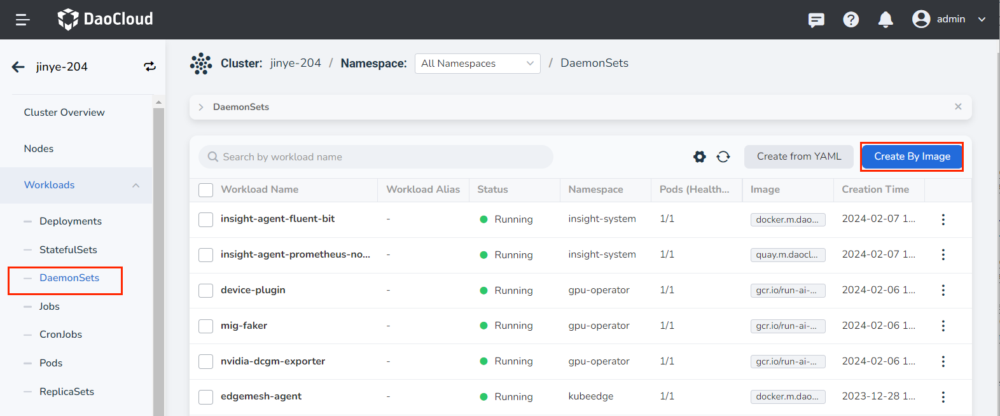
-
Fill in Basic Information, Container Settings, Service Settings, Advanced Settings, click OK in the lower right corner of the page to complete the creation.
The system will automatically return the list of DaemonSets . Click ┇ on the right side of the list to perform operations such as updating, deleting, and restarting the DaemonSet.
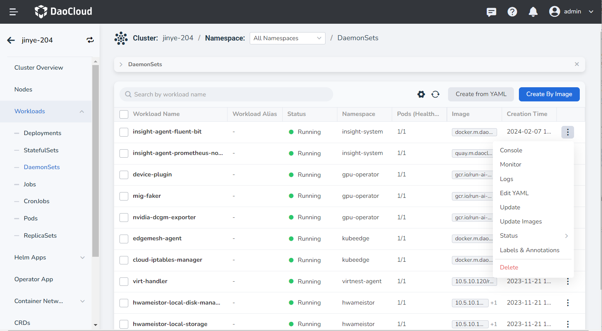
Basic information¶
On the Create DaemonSets page, after entering the information according to the table below, click Next .
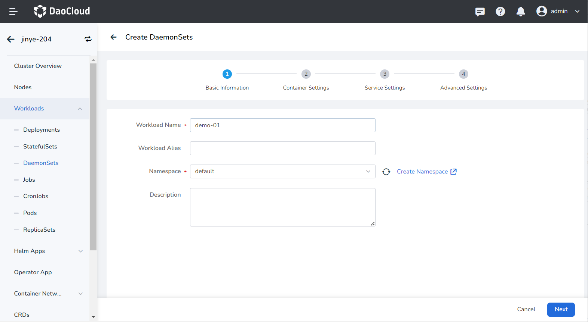
- Workload Name: Can contain up to 63 characters, can only contain lowercase letters, numbers, and a separator ("-"), and must start and end with a lowercase letter or number. The name of the same type of workload in the same namespace cannot be repeated, and the name of the workload cannot be changed after the workload is created.
- Namespace: Select which namespace to deploy the newly created DaemonSet in, and the default namespace is used by default. If you can't find the desired namespace, you can go to Create a new namespace according to the prompt on the page.
- Description: Enter the description information of the workload and customize the content. The number of characters should not exceed 512.
Container settings¶
Container setting is divided into six parts: basic information, life cycle, health check, environment variables, data storage, and security settings. Click the tab below to view the requirements of each part.
Container setting is only configured for a single container. To add multiple containers to a pod, click + on the right to add multiple containers.
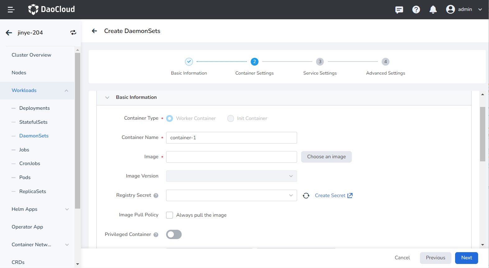
When configuring container-related parameters, you must correctly fill in the container name and image parameters, otherwise you will not be able to proceed to the next step. After filling in the settings with reference to the following requirements, click OK .
- Container Name: Up to 63 characters, lowercase letters, numbers and separators ("-") are supported. Must start and end with a lowercase letter or number, eg nginx-01.
- Image: Enter the address or name of the image. When entering the image name, the image will be pulled from the official DockerHub by default. After accessing the container registry module of AI platform, you can click Select Image on the right to select an image.
- Image Pull Policy: After checking Always pull image , the image will be pulled from the registry every time the workload restarts/upgrades. If it is not checked, only the local image will be pulled, and only when the image does not exist locally, it will be re-pulled from the container registry. For more details, refer to Image Pull Policy.
- Privileged container: By default, the container cannot access any device on the host. After enabling the privileged container, the container can access all devices on the host and enjoy all the permissions of the running process on the host.
- CPU/Memory Quota: Requested value (minimum resource to be used) and limit value (maximum resource allowed to be used) of CPU/Memory resource. Please configure resources for containers as needed to avoid resource waste and system failures caused by excessive container resources. The default value is shown in the figure.
-
GPU Exclusive: Configure the GPU usage for the container, only positive integers are supported. The GPU quota setting supports setting exclusive use of the entire GPU card or part of the vGPU for the container. For example, for an 8-core GPU card, enter the number 8 to let the container exclusively use the entire length of the card, and enter the number 1 to configure a 1-core vGPU for the container.
Before setting exclusive GPU, the administrator needs to install the GPU card and driver plug-in on the cluster nodes in advance, and enable the GPU feature in Cluster Settings.
Set the commands that need to be executed when the container starts, after starting, and before stopping. For details, refer to Container Lifecycle Configuration.
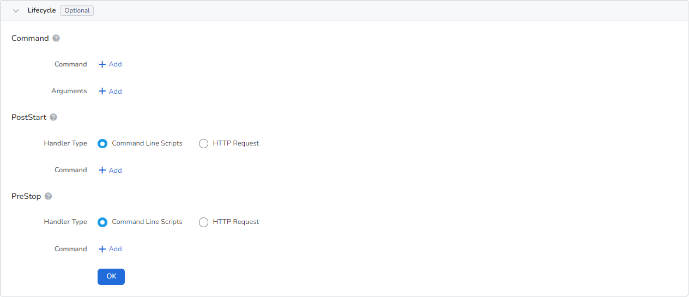
It is used to judge the health status of containers and applications, which helps to improve the availability of applications. For details, refer to Container Health Check Configuration.

Configure container parameters within the Pod, add environment variables or pass settings to the Pod, etc. For details, refer to Container environment variable settings.

Configure the settings for container mounting data volumes and data persistence. For details, refer to Container Data Storage Configuration.
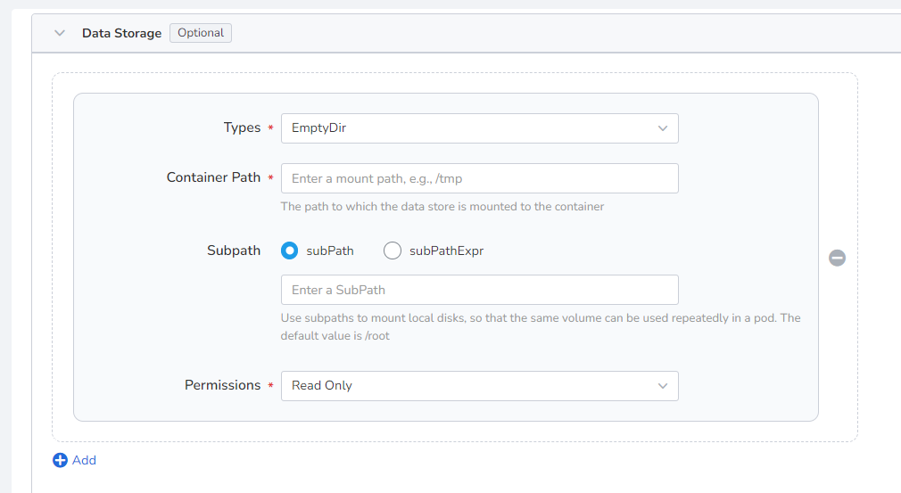
Containers are securely isolated through Linux's built-in account authority isolation mechanism. You can limit container permissions by using account UIDs (digital identity tokens) with different permissions. For example, enter 0 to use the privileges of the root account.

Service settings¶
Create a Service (Service) for the daemon, so that the daemon can be accessed externally.
-
Click the Create Service button.
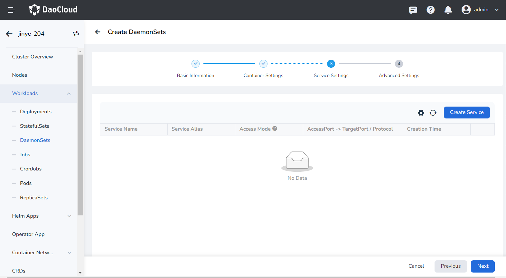
-
Configure service parameters, refer to Create Service for details.

-
Click OK and click Next .
Advanced settings¶
Advanced setting includes four parts: load network settings, upgrade policy, scheduling policy, label and annotation. You can click the tabs below to view the requirements of each part.
In some cases, the application will have redundant DNS queries. Kubernetes provides DNS-related settings options for applications, which can effectively reduce redundant DNS queries and increase business concurrency in certain cases.
-
DNS Policy
- Default: Make the container use the domain name resolution file pointed to by the --resolv-conf parameter of kubelet. This setting can only resolve external domain names registered on the Internet, but cannot resolve cluster internal domain names, and there is no invalid DNS query.
- ClusterFirstWithHostNet: The domain name file of the host to which the application is connected.
- ClusterFirst: application docking with Kube-DNS/CoreDNS.
- None: New option value introduced in Kubernetes v1.9 (Beta in v1.10). After setting to None, dnsConfig must be set, at this time the domain name of the containerThe parsing file will be completely generated through the settings of dnsConfig.
-
Nameservers: fill in the address of the domain name server, such as 10.6.175.20 .
- Search domains: DNS search domain list for domain name query. When specified, the provided search domain list will be merged into the search field of the domain name resolution file generated based on dnsPolicy, and duplicate domain names will be deleted. Kubernetes allows up to 6 search domains.
- Options: Configuration options for DNS, where each object can have a name attribute (required) and a value attribute (optional). The content in this field will be merged into the options field of the domain name resolution file generated based on dnsPolicy. If some options of dnsConfig options conflict with the options of the domain name resolution file generated based on dnsPolicy, they will be overwritten by dnsConfig.
- Host Alias: the alias set for the host.
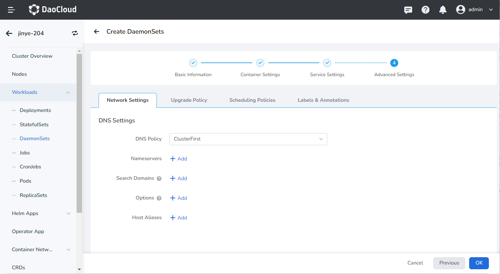
- Upgrade Mode: Rolling upgrade refers to gradually replacing instances of the old version with instances of the new version. During the upgrade process, business traffic will be load-balanced to the old and new instances at the same time, so the business will not be interrupted. Rebuild and upgrade refers to deleting the workload instance of the old version first, and then installing the specified new version. During the upgrade process, the business will be interrupted.
- Max Unavailable Pods: Specify the maximum value or ratio of unavailable pods during the workload update process, the default is 25%. If it is equal to the number of instances, there is a risk of service interruption.
- Max Surge: The maximum or ratio of the total number of Pods exceeding the desired replica count of Pods during a Pod update. Default is 25%.
- Revision History Limit: Set the number of old versions retained when the version is rolled back. The default is 10.
- Minimum Ready: The minimum time for a Pod to be ready. Only after this time is the Pod considered available. The default is 0 seconds.
- Upgrade Max Duration: If the deployment is not successful after the set time, the workload will be marked as failed. Default is 600 seconds.
- Graceful Period: The execution period (0-9,999 seconds) of the command before the workload stops, the default is 30 seconds.
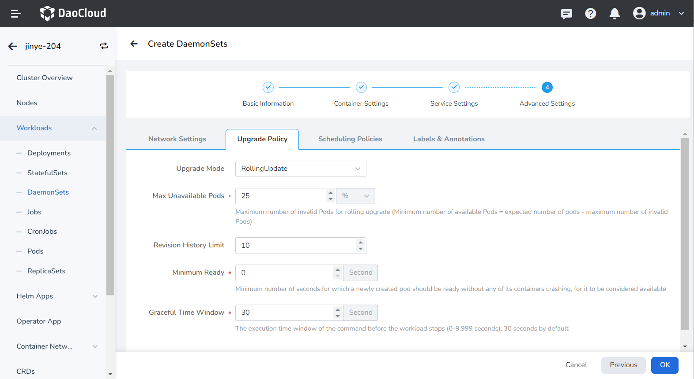
- Toleration time: When the node where the workload instance is located is unavailable, the time for rescheduling the workload instance to other available nodes, the default is 300 seconds.
- Node affinity: According to the label on the node, constrain which nodes the Pod can be scheduled on.
- Workload Affinity: Constrains which nodes a Pod can be scheduled to based on the labels of the Pods already running on the node.
- Workload anti-affinity: Constrains which nodes a Pod cannot be scheduled to based on the labels of Pods already running on the node.
- Topology domain: namely topologyKey, used to specify a group of nodes that can be scheduled. For example, kubernetes.io/os indicates that as long as the node of an operating system meets the conditions of labelSelector, it can be scheduled to the node.
For details, refer to Scheduling Policy.
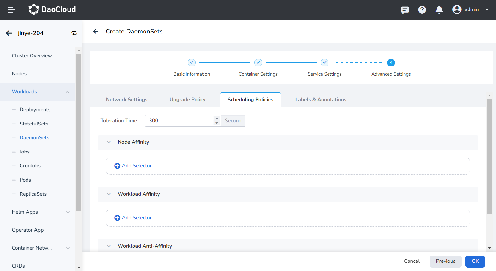
You can click the Add button to add tags and annotations to workloads and pods.
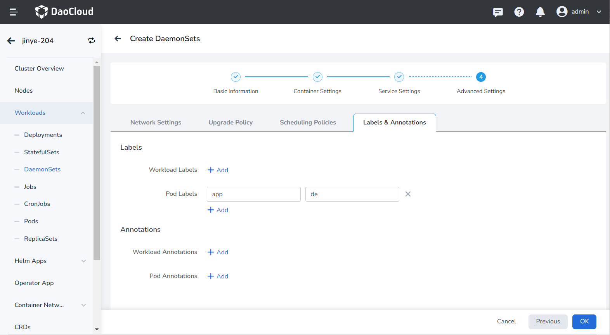
Create from YAML¶
In addition to image, you can also create daemons more quickly through YAML files.
-
Click Clusters on the left navigation bar, and then click the name of the target cluster to enter the Cluster Details page.
-
On the cluster details page, click Workload -> Daemons in the left navigation bar, and then click the YAML Create button in the upper right corner of the page.
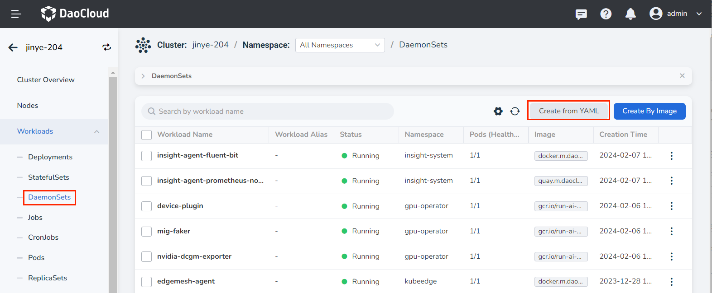
-
Enter or paste the YAML file prepared in advance, click OK to complete the creation.
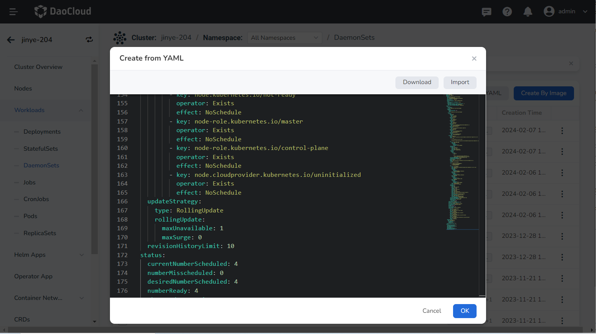
Click to see an example YAML for creating a daemon
kind: DaemonSet
apiVersion: apps/v1
metadata:
name: hwameistor-local-disk-manager
namespace: hwameistor
uid: ccbdc098-7de3-4a8a-96dd-d1cee159c92b
resourceVersion: '90999552'
generation: 1
creationTimestamp: '2022-12-15T09:03:44Z'
labels:
app.kubernetes.io/managed-by: Helm
annotations:
deprecated.DaemonSet.template.generation: '1'
meta.helm.sh/release-name: hwameistor
meta.helm.sh/release-namespace:hwameistor
spec:
selector:
matchLabels:
app: hwameistor-local-disk-manager
template:
metadata:
creationTimestamp: null
labels:
app: hwameistor-local-disk-manager
spec:
volumes:
- name: udev
hostPath:
path: /run/udev
type: Directory
- name: procmount
hostPath:
path: /proc
type: Directory
- name: devmount
hostPath:
path: /dev
type: Directory
- name: socket-dir
hostPath:
path: /var/lib/kubelet/plugins/disk.hwameistor.io
type: DirectoryOrCreate
- name: registration-dir
hostPath:
path: /var/lib/kubelet/plugins_registry/
type: Directory
- name: plugin-dir
hostPath:
path: /var/lib/kubelet/plugins
type: DirectoryOrCreate
- name: pods-mount-dir
hostPath:
path: /var/lib/kubelet/pods
type: DirectoryOrCreate
containers:
- name: registrar
image: k8s-gcr.m.daocloud.io/sig-storage/csi-node-driver-registrar:v2.5.0
args:
- '--v=5'
- '--csi-address=/csi/csi.sock'
- >-
--kubelet-registration-path=/var/lib/kubelet/plugins/disk.hwameistor.io/csi.sock
env:
- name: KUBE_NODE_NAME
valueFrom:
fieldRef:
apiVersion: v1
fieldPath: spec.nodeName
resources: {}
volumeMounts:
- name: socket-dir
mountPath: /csi
- name: registration-dir
mountPath: /registration
lifecycle:
preStop:
exec:
command:
- /bin/sh
- '-c'
- >-
rm -rf /registration/disk.hwameistor.io
/registration/disk.hwameistor.io-reg.sock
terminationMessagePath: /dev/termination-log
terminationMessagePolicy: File
imagePullPolicy: IfNotPresent
-name: managerimage: ghcr.m.daocloud.io/hwameistor/local-disk-manager:v0.6.1
command:
- /local-disk-manager
args:
- '--endpoint=$(CSI_ENDPOINT)'
- '--nodeid=$(NODENAME)'
- '--csi-enable=true'
env:
- name: CSI_ENDPOINT
value: unix://var/lib/kubelet/plugins/disk.hwameistor.io/csi.sock
- name: NAMESPACE
valueFrom:
fieldRef:
apiVersion: v1
fieldPath: metadata.namespace
- name: WATCH_NAMESPACE
valueFrom:
fieldRef:
apiVersion: v1
fieldPath: metadata.namespace
- name: POD_NAME
valueFrom:
fieldRef:
apiVersion: v1
fieldPath: metadata.name
- name: NODENAME
valueFrom:
fieldRef:
apiVersion: v1
fieldPath: spec.nodeName
- name: OPERATOR_NAME
value: local-disk-manager
resources: {}
volumeMounts:
- name: udev
mountPath: /run/udev
- name: procmount
readOnly: true
mountPath: /host/proc
- name: devmount
mountPath: /dev
- name: registration-dir
mountPath: /var/lib/kubelet/plugins_registry
- name: plugin-dir
mountPath: /var/lib/kubelet/plugins
mountPropagation: Bidirectional
- name: pods-mount-dir
mountPath: /var/lib/kubelet/pods
mountPropagation: Bidirectional
terminationMessagePath: /dev/termination-log
terminationMessagePolicy: File
imagePullPolicy: IfNotPresent
securityContext:
privileged: true
restartPolicy: Always
terminationGracePeriodSeconds: 30
dnsPolicy: ClusterFirst
serviceAccountName: hwameistor-admin
serviceAccount: hwameistor-admin
hostNetwork: true
hostPID: true
securityContext: {}
schedulerName: default-scheduler
tolerations:
- key: CriticalAddonsOnly
operator: Exists
- key: node.kubernetes.io/not-ready
operator: Exists
effect: NoSchedule
- key: node-role.kubernetes.io/master
operator: Exists
effect: NoSchedule
- key: node-role.kubernetes.io/control-plane
operator: Exists
effect: NoSchedule
- key: node.cloudprovider.kubernetes.io/uninitialized
operator: Exists
effect: NoSchedule
updateStrategy:
type: RollingUpdate
rollingUpdate:
maxUnavailable: 1
maxSurge: 0
revisionHistoryLimit: 10
status:
currentNumberScheduled: 4
numberMisscheduled: 0
desiredNumberScheduled: 4
numberReady: 4
observedGeneration: 1
updatedNumberScheduled: 4
numberAvailable: 4